penelope purpurascens
test clip of 10 frames · glance alone said meleagris ocellata (53%)As proposed
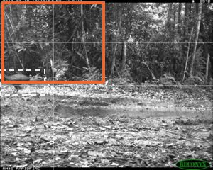
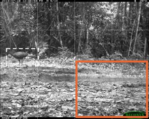
✗ meleagris ocellata (39%)
Final
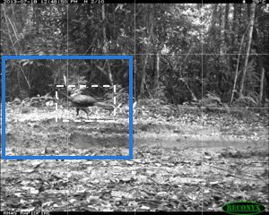
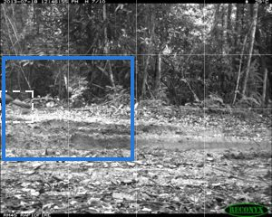
✓ penelope purpurascens (71%)
Teaching frozen ViT encoders where, and when, to look in video.
Dawit Chun · DA411 Computational Mathematics, final project (Option A) · proposal · derivations
Share of looks on a crop that holds the animal. Detector boxes are used only to measure this.
iWildCam test clips from 48 cameras never seen in training (3,930 clips, 3 seeds). Clip accuracy (%); T = frames per clip; looks are 2× crops. Underlined: best method at about T+2 passes.
Test clips where glancing alone was wrong. Each version took 2 looks (coloured squares). The dashed white box is the detector's animal box, drawn for you; the eyes never see it.


✗ meleagris ocellata (39%)


✓ penelope purpurascens (71%)
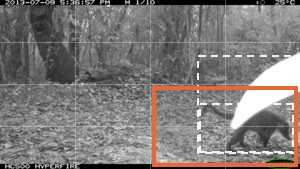
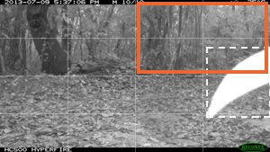
✗ canis lupus (34%)
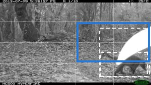
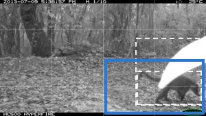
✓ nasua narica (33%)
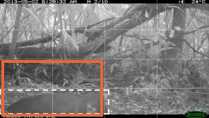
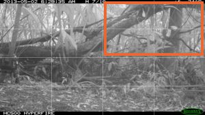
✗ eira barbara (27%)
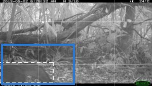
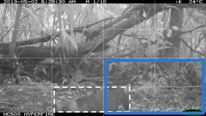
✓ urocyon cinereoargenteus (75%)
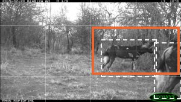
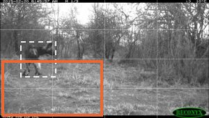
✗ hyaena hyaena (59%)
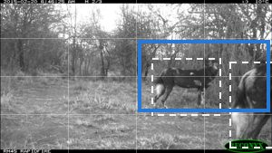
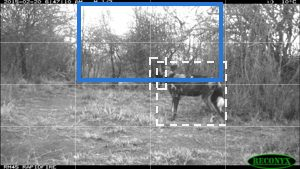
✓ lycaon pictus (27%)
As proposed, every look lowered accuracy. The cause: each crop was trained with the clip's species, although two thirds of crops show only background, so the crop classifier learned "this scenery means this species"; and Bayes' rule then read a background crop's empty vote as evidence against the glance. Four changes, each fitted on held-out cameras:
uv venv --python 3.11 .venv && uv pip install --python .venv/bin/python -e ".[dev]" .venv/bin/python -m pytest # 43 tests, no data needed python scripts/synthetic_study.py # the method on synthetic clips, no data needed # full pipeline (data download, encoding, evaluation): see README.md